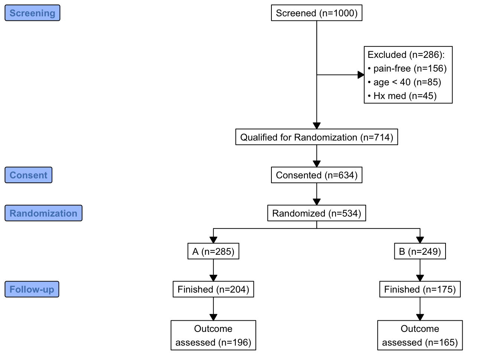

Code
#lapply(c('tidyverse','data.table','igraph','ggraph','kableExtra'),library,character.only=TRUE))
pacman::p_load(tidyverse,data.table,igraph,ggraph,kableExtra,DiagrammeR,png,consort,data.table) #lapply(c('tidyverse','data.table','igraph','ggraph','kableExtra'),library,character.only=TRUE))
pacman::p_load(tidyverse,data.table,igraph,ggraph,kableExtra,DiagrammeR,png,consort,data.table) grViz("digraph dot {
graph [style = filled, fillcolor = white]
node [shape = circle,
style = filled, fillcolor = white,
fixedsize = true, width = 0.5, height = 0.5,
fontname = 'Times-italic']
c
d
node [shape = doublecircle,
style = filled, fillcolor = white,
fixedsize = true, width = 0.5, height = 0.5,
fontname = 'Times-italic']
thetah [label = 'θ@^{(h)}']
thetaf [label = 'θ@^{(f)}']
node [shape = square,
style = filled, fillcolor = grey,
fixedsize = true, width=0.5, height=0.5,
fontname = 'Times-italic']
h
f
ns [label = 'n@_{S}']
nn [label = 'n@_{N}']
edge [color = black]
c -> thetah -> h
d -> thetaf -> f
c -> thetaf
d -> thetah
ns -> h
nn -> f
{rank = max; ns; nn}
}")grViz("digraph dot {
graph [style = filled, fillcolor = white,
rankdir = LR,
newrank = true]
node [shape = circle,
style = filled, fillcolor = white,
fixedsize = true, width = 0.5, height = 0.5,
fontname = 'Times-italic']
p [fillcolor = gray]
gamma [label = 'γ']
omega [label = 'ω', shape = doublecircle]
beta [label = 'β']
subgraph cluster_out{
fontsize = 8
label = <<I>j</I>:試行>
labelloc = b
labeljust = r
subgraph cluster_in{
fontsize = 8
label = <<I>k</I>:回数>
labelloc = b
labeljust = r
thetajk [label = 'θ@_{jk}', shape = doublecircle]
djk [label = 'd@_{jk}', shape = square, fillcolor = gray]
}}
edge [color=black]
p -> omega -> thetajk -> djk
gamma -> omega
beta -> thetajk
{rank = same; gamma; omega}
{rank = same; beta; thetajk}
}")grViz('
digraph G {
fontname="Helvetica,Arial,sans-serif"
node [fontname="Helvetica,Arial,sans-serif"]
edge [fontname="Helvetica,Arial,sans-serif"]
subgraph cluster_0 {
style=filled;
color=lightgrey;
node [style=filled,color=white];
a0 -> a1 -> a2 -> a3;
label = "process #1";
}
subgraph cluster_1 {
node [style=filled];
b0 -> b1 -> b2 -> b3;
label = "process #2";
color=blue
}
start -> a0;
start -> b0;
a1 -> b3;
b2 -> a3;
a3 -> a0;
a3 -> end;
b3 -> end;
start [shape=Mdiamond];
end [shape=Msquare];
}')#https://graphviz.org/Gallery/directed/neural-network.html
grViz('digraph G {
fontname="Helvetica,Arial,sans-serif"
node [fontname="Helvetica,Arial,sans-serif"]
edge [fontname="Helvetica,Arial,sans-serif"]
concentrate=True;
rankdir=TB;
node [shape=record];
140087530674552 [label="title: InputLayer\n|{input:|output:}|{{[(?, ?)]}|{[(?, ?)]}}"];
140087537895856 [label="body: InputLayer\n|{input:|output:}|{{[(?, ?)]}|{[(?, ?)]}}"];
140087531105640 [label="embedding_2: Embedding\n|{input:|output:}|{{(?, ?)}|{(?, ?, 64)}}"];
140087530711024 [label="embedding_3: Embedding\n|{input:|output:}|{{(?, ?)}|{(?, ?, 64)}}"];
140087537980360 [label="lstm_2: LSTM\n|{input:|output:}|{{(?, ?, 64)}|{(?, 128)}}"];
140087531256464 [label="lstm_3: LSTM\n|{input:|output:}|{{(?, ?, 64)}|{(?, 32)}}"];
140087531106200 [label="tags: InputLayer\n|{input:|output:}|{{[(?, 12)]}|{[(?, 12)]}}"];
140087530348048 [label="concatenate_1: Concatenate\n|{input:|output:}|{{[(?, 128), (?, 32), (?, 12)]}|{(?, 172)}}"];
140087530347992 [label="priority: Dense\n|{input:|output:}|{{(?, 172)}|{(?, 1)}}"];
140087530711304 [label="department: Dense\n|{input:|output:}|{{(?, 172)}|{(?, 4)}}"];
140087530674552 -> 140087531105640;
140087537895856 -> 140087530711024;
140087531105640 -> 140087537980360;
140087530711024 -> 140087531256464;
140087537980360 -> 140087530348048;
140087531256464 -> 140087530348048;
140087531106200 -> 140087530348048;
140087530348048 -> 140087530347992;
140087530348048 -> 140087530711304;
}')require(data.table)
require(qreport)
require(consort)
# Load the necessary libraries
require(data.table)
require(qreport)
# Define the mermaid diagram
x <- '
graph LR
InputLayer[Input Layer] --> I1[{{I1}}]
InputLayer --> I2[{{I2}}]
InputLayer --> I3[{{I3}}]
I1 --> O1[w1]
I1 --> O2[w2]
I1 --> O3[w3]
I1 --> O4[w4]
I2 --> O1[w5]
I2 --> O2[w6]
I2 --> O3[w7]
I2 --> O4[w8]
I3 --> O1[w9]
I3 --> O2[w10]
I3 --> O3[w11]
I3 --> O4[w12]
OutputLayer[Output Layer] --> O1
OutputLayer --> O2
OutputLayer --> O3
OutputLayer --> O4
OutputLayer --> ALM[ALM Response]
OutputLayer --> EXAM[EXAM Response]
ALM --> EXAM[Pure ALM Model]
EXAM --> ALM[ALM with EXAM Response Component]
'
# Generate the mermaid diagram
makemermaid(x,
I1 = '',
I2 = '',
I3 = '',
file = 'alm_exam.mer'
)
# Output the mermaid diagram
# cat('```{mermaid}\n')
# cat(readLines('alm_exam.mer'), sep = '\n')
# cat('```\n')graph LR InputLayer[Input Layer] --> I1[] InputLayer --> I2[] InputLayer --> I3[] I1 --> O1[w1] I1 --> O2[w2] I1 --> O3[w3] I1 --> O4[w4] I2 --> O1[w5] I2 --> O2[w6] I2 --> O3[w7] I2 --> O4[w8] I3 --> O1[w9] I3 --> O2[w10] I3 --> O3[w11] I3 --> O4[w12] OutputLayer[Output Layer] --> O1 OutputLayer --> O2 OutputLayer --> O3 OutputLayer --> O4 OutputLayer --> ALM[ALM Response] OutputLayer --> EXAM[EXAM Response] ALM --> EXAM[Pure ALM Model] EXAM --> ALM[ALM with EXAM Response Component]
mermaid with individual exclusions linked to the overall exclusions node, and with a tooltip to show more detaillibrary(consort)
set.seed(1001)
N <- 300
trialno <- sample(c(1000:2000), N)
exc <- rep(NA, N)
exc[sample(1:N, 15)] <- sample(c("Sample not collected", "MRI not collected", "Other"),
15, replace = T, prob = c(0.4, 0.4, 0.2))
arm <- rep(NA, N)
arm[is.na(exc)] <- sample(c("Conc", "Seq"), sum(is.na(exc)), replace = T)
fow1 <- rep(NA, N)
fow1[!is.na(arm)] <- sample(c("Withdraw", "Discontinued", "Death", "Other", NA),
sum(!is.na(arm)), replace = T,
prob = c(0.05, 0.05, 0.05, 0.05, 0.8))
fow2 <- rep(NA, N)
fow2[!is.na(arm) & is.na(fow1)] <- sample(c("Protocol deviation", "Outcome missing", NA),
sum(!is.na(arm) & is.na(fow1)), replace = T,
prob = c(0.05, 0.05, 0.9))
df <- data.frame(trialno, exc, arm, fow1, fow2)
out <- consort_plot(data = df,
order = c(trialno = "Population",
exc = "Excluded",
arm = "Randomized patient",
fow1 = "Lost of Follow-up",
trialno = "Finished Followup",
fow2 = "Not evaluable",
trialno = "Final Analysis"),
side_box = c("exc", "fow1", "fow2"),
allocation = "arm",
labels = c("1" = "Screening", "2" = "Randomization",
"5" = "Final"),
cex = 0.6)
plot(out)
plot(out, grViz = TRUE)require(Hmisc)
require(data.table)
require(qreport)
hookaddcap()
N <- 1000
set.seed(1)
r <- data.table(
id = 1 : N,
age = round(rnorm(N, 60, 15)),
pain = sample(0 : 5, N, replace=TRUE),
hxmed = sample(0 : 1, N, replace=TRUE, prob=c(0.95, 0.05)) )
# Set consent status to those not excluded at screening
r[age >= 40 & pain > 0 & hxmed == 0,
consent := sample(0 : 1, .N, replace=TRUE, prob=c(0.1, 0.9))]
# Set randomization status for those consenting
r[consent == 1,
randomized := sample(0 : 1, .N, replace=TRUE, prob=c(0.15, 0.85))]
# Add treatment and follow-up time to randomized subjects
r[randomized == 1, tx := sample(c('A', 'B'), .N, replace=TRUE)]
r[randomized == 1, futime := pmin(runif(.N, 0, 10), 3)]
# Add outcome status for those followed 3 years
# Make a few of those followed 3 years missing
r[futime == 3,
y := sample(c(0, 1, NA), .N, replace=TRUE, prob=c(0.75, 0.2, 0.05))]
# Print first 15 subjects
kabl(r[1 : 15, ])| id | age | pain | hxmed | consent | randomized | tx | futime | y |
|---|---|---|---|---|---|---|---|---|
| 1 | 51 | 2 | 1 | NA | NA | NA | NA | NA |
| 2 | 63 | 2 | 0 | 1 | 1 | A | 3.0000 | 0 |
| 3 | 47 | 1 | 0 | 1 | 1 | A | 3.0000 | NA |
| 4 | 84 | 5 | 0 | 1 | 0 | NA | NA | NA |
| 5 | 65 | 3 | 0 | 1 | 1 | B | 3.0000 | 1 |
| 6 | 48 | 4 | 0 | 1 | 1 | A | 3.0000 | 0 |
| 7 | 67 | 3 | 0 | 1 | 1 | B | 2.0566 | NA |
| 8 | 71 | 0 | 0 | NA | NA | NA | NA | NA |
| 9 | 69 | 5 | 0 | 1 | 1 | B | 1.2815 | NA |
| 10 | 55 | 2 | 0 | 1 | 1 | B | 1.2388 | NA |
| 11 | 83 | 4 | 0 | 1 | 1 | A | 3.0000 | 1 |
| 12 | 66 | 5 | 0 | 1 | 1 | A | 3.0000 | 0 |
| 13 | 51 | 1 | 0 | 1 | 1 | B | 3.0000 | 0 |
| 14 | 27 | 2 | 0 | NA | NA | NA | NA | NA |
| 15 | 77 | 2 | 0 | 1 | 1 | A | 3.0000 | 0 |
r[, exc := seqFreq('pain-free' = pain == 0,
'Hx med' = hxmed == 1,
age < 40,
noneNA=TRUE)]
eo <- attr(r[, exc], 'obs.per.numcond')
mult <- paste0('1, 2, ≥3 exclusions: n=',
eo[2], ', ',
eo[3], ', ',
eo[-(1:3)] )
r[, .q(qual, consent, fin) :=
.(is.na(exc),
ifelse(consent == 1, 1, NA),
ifelse(futime >= 3, 1, NA))]
require(consort)
# consort_plot used to take a coords=c(0.4, 0.6) argument that prevented
# the collision you see here
consort_plot(r,
orders = c(id = 'Screened',
exc = 'Excluded',
qual = 'Qualified for Randomization',
consent = 'Consented',
tx = 'Randomized',
fin = 'Finished',
y = 'Outcome\nassessed'),
side_box = 'exc',
allocation = 'tx',
labels=c('1'='Screening', '3'='Consent', '4'='Randomization', '6'='Follow-up'))
h <- function(n, label) paste0(label, ' (n=', n, ')')
htab <- function(x, label=NULL, split=! length(label), br='\n') {
tab <- table(x)
w <- if(length(label)) paste0(h(sum(tab), label), ':', br)
f <- if(split) h(tab, names(tab))
else
paste(paste0(' ', h(tab, names(tab))), collapse=br)
if(split) return(f)
paste(w, f, sep=if(length(label))'' else br)
}
count <- function(x, by=rep(1, length(x)))
tapply(x, by, sum, na.rm=TRUE)
w <- r[, {
g <-
add_box(txt=h(nrow(r), 'Screened')) |>
add_side_box(htab(exc, 'Excluded')) |>
add_box(h(count(is.na(exc)), 'Qualified for Randomization')) |>
add_box(h(count(consent), 'Consented')) |>
add_box(h(count(randomized), 'Randomized')) |>
add_split(htab(tx)) |>
add_box(h(count(fin, tx), 'Finished')) |>
add_box(h(count(! is.na(y), tx), 'Outcome\nassessed')) |>
add_label_box(c('1'='Screening', '3'='Consent',
'4'='Randomization', '6'='Follow-up'))
plot(g)
}
]
addCap('fig-doverview-mermaid1', 'Consort diagram produced by `mermaid`')
x <- 'flowchart TD
S["Screened (n={{N0}})"] --> E["{{excl}}"]
S --> Q["Qualified for Randomization (n={{Nq}})"]
Q --> C["Consented (n={{Nc}})"]
C --> R["Randomized (n={{Nr}})"]
R --> TxA["A (n={{Ntxa}})"]
R --> TxB["B (n={{Ntxb}})"]
TxA --> FA["Finished (n={{Ntxaf}})"]
TxB --> FB["Finished (n={{Ntxbf}})"]
FA --> OA["Outcome assessed (n={{Ntxao}})"]
FB --> OB["Outcome assessed (n={{Ntxbo}})"]
classDef largert fill:lightgray,width:1.5in,height:10em,text-align:right,font-size:0.8em;
class E largert;
'
w <- r[,
makemermaid(x,
N0 = nrow(r),
excl = htab(exc, 'Excluded', br='<br>'),
Nq = count(is.na(exc)),
Nc = count(consent),
Nr = count(randomized),
Ntxa = count(tx == 'A'),
Ntxb = count(tx == 'B'),
Ntxaf= count(tx == 'A' & fin),
Ntxbf= count(tx == 'B' & fin),
Ntxao= count(tx == 'A' & ! is.na(y)),
Ntxbo= count(tx == 'B' & ! is.na(y)),
file = 'mermaid1.mer'
)
]flowchart TD S["Screened (n=1000)"] --> E["Excluded (n=286):<br> pain-free (n=156)<br> age < 40 (n=85)<br> Hx med (n=45)"] S --> Q["Qualified for Randomization (n=714)"] Q --> C["Consented (n=634)"] C --> R["Randomized (n=534)"] R --> TxA["A (n=285)"] R --> TxB["B (n=249)"] TxA --> FA["Finished (n=204)"] TxB --> FB["Finished (n=175)"] FA --> OA["Outcome assessed (n=196)"] FB --> OB["Outcome assessed (n=165)"] classDef largert fill:lightgray,width:1.5in,height:10em,text-align:right,font-size:0.8em; class E largert;
mermaid# Create some service functions so later it will be easy to change from
# mermaid to graphviz
makenode <- function(name, label) paste0(name, '["', label, '"]')
makeconnection <- function(from, to) paste0(from, ' --> ', to)
exclnodes <- function(x, from='E', root='E', seq=FALSE, remain=FALSE) {
# Create complete node specifications for individual exclusions, each
# linking to overall exclusion count assumed to be in node root.
# Set seq=TRUE to make use of the fact that the exclusions were
# done in frequency priority order so that each exclusion is in
# addition to the previous one. Leave seq=FALSE to make all exclusions
# subservient to root. Use remain=TRUE to include # obs remaining
# remain=TRUE assumes noneNA specified to seqFreq
tab <- table(x)
i <- 1 : length(tab)
rem <- if(remain) paste0(', ', length(x) - cumsum(tab), ' remain')
labels <- paste0(names(tab), ' (n=', tab, rem, ')')
nodes <- if(seq) makenode(ifelse(i == 1, paste0(root, '1'), paste0(root, i)),
labels)
else makenode(paste0(root, i), labels)
connects <- if(seq) makeconnection(ifelse(i == 1, from, paste0(root, i - 1)),
paste0(root, i))
else makeconnection(from, paste0(root, i))
paste(c(nodes, connects), collapse='\n')
}
# Create parallel treatment nodes
# Treatments are assumed to be in order by the tx variable
# and will appear left to right in the diagram
# Treatment node names correspond to that and are Tx1, Tx2, ...
# root: root of new nodes, from: single node name to connect from
# fromparallel: root of connected-from node name which is to be
# expanded by adding the integers 1, 2, ... number of treatments.
Txs <- r[, if(is.factor(tx)) levels(tx) else sort(unique(tx))]
parNodes <- function(counts, root, from=NULL, fromparallel=NULL,
label=Txs) {
if(! identical(names(counts), Txs)) stop('Txs not consistent')
k <- length(Txs)
ns <- paste0(' (n=', counts, ')')
nodenames <- paste0(root, 1 : k)
nodes <- makenode(nodenames, paste0(label, ns))
connects <- if(length(fromparallel)) makeconnection(paste0(fromparallel, 1 : k), nodenames)
else makeconnection(from, nodenames)
paste(c(nodes, connects), collapse='\n')
}
# Create tooltip text from tabulation created by seqFreq earlier
efreq <- data.frame('# Exclusions'= (1 : length(eo)) - 1,
'# Subjects' = eo, check.names=FALSE)
efreq <- subset(efreq, `# Subjects` > 0)
# Convert to text which will be wrapped by the html
excltab <- paste(capture.output(print(efreq, row.names=FALSE)),
collapse='\n')
addCap('fig-doverview-mermaid2', 'Consort diagram produced with `mermaid` with individual exclusions linked to the overall exclusions node, and with a tooltip to show more detail')
x <- '
flowchart TD
S["Screened (n={{N0}})"] --> E["Excluded (n={{Ne}})"]
{{exclsep}}
E1 & E2 & E3 --> M["{{mult}}"]
S --> Q["Qualified for Randomization (n={{Nq}})"]
Q --> C["Consented (n={{Nc}})"]
C --> R["Randomized (n={{Nr}})"]
{{txcounts}}
{{finished}}
{{outcome}}
click E callback "{{excltab}}"
'
w <- r[,
makemermaid(x,
N0 = nrow(r),
Ne = count(! is.na(exc)),
exclsep = exclnodes(exc), # add seq=TRUE to put exclusions vertical
excltab = excltab, # tooltip text
mult = mult, # separate node: count multiple exclusions
Nq = count(is.na(exc)),
Nc = count(consent),
Nr = count(randomized),
txcounts = parNodes(table(tx), 'Tx', from='R'),
finished = parNodes(count(fin, by=tx), 'F', fromparallel='Tx',
label='Finished'),
outcome = parNodes(count(! is.na(y), by=tx), 'O',
fromparallel='F', label='Outcome assessed'),
file='mermaid2.mer' # save generated code for another use
)
]
makenode <- function(name, label) paste0(name, ' [label="', label, '"];')
makeconnection <- function(from, to) paste0(from, ' -> ', to, ';')
# Create data frame from tabulation created by seqFreq earlier
efreq <- data.frame('# Exclusions'= (1 : length(eo)) - 1,
'# Subjects' = eo, check.names=FALSE)
efreq <- subset(efreq, `# Subjects` > 0)
x <- 'digraph {
graph [pad="0.5", nodesep="0.5", ranksep="2", splines=ortho]
// splines=ortho for square connections
node [shape=box, fontsize="30"]
rankdir=TD;
S [label="Screened (n={{N0}})"];
E [label="Excluded (n={{Ne}})"];
S -> E;
{{exclsep}}
M [label="{{mult}}"];
E1 -> M;
E2 -> M;
E3 -> M;
Q [label="Qualified for Randomization (n={{Nq}})"];
C [label="Consented (n={{Nc}})"];
R [label="Randomized (n={{Nr}})"];
S -> Q;
Q -> C;
C -> R;
{{txcounts}}
{{finished}}
{{outcome}}
efreq [label=<{{efreq}}>];
M -> efreq [dir=none, style=dotted];
}
'
w <- r[,
makegraphviz(x,
N0 = nrow(r),
Ne = count(! is.na(exc)),
exclsep = exclnodes(exc), # add seq=TRUE to put exclusions vertical
efreq = efreq,
mult = mult, # separate node: count multiple exclusions
Nq = count(is.na(exc)),
Nc = count(consent),
Nr = count(randomized),
txcounts = parNodes(table(tx), 'Tx', from='R'),
finished = parNodes(count(fin, by=tx), 'F', fromparallel='Tx',
label='Finished'),
outcome = parNodes(count(! is.na(y), by=tx), 'O',
fromparallel='F', label='Outcome assessed'),
file='graphviz.dot'
)
]
# addCap('fig-doverview-graphviza', 'Consort diagram produced with `graphviz` with detailed exclusion frequencies in a separate node', scap='Consort diagram produced with `graphviz`')flowchart TD
S["Screened (n=1000)"] --> E["Excluded (n=286)"]
E1["pain-free (n=156)"]
E2["age < 40 (n=85)"]
E3["Hx med (n=45)"]
E --> E1
E --> E2
E --> E3
E1 & E2 & E3 --> M["1, 2, ≥3 exclusions: n=260, 25, 1"]
S --> Q["Qualified for Randomization (n=714)"]
Q --> C["Consented (n=634)"]
C --> R["Randomized (n=534)"]
Tx1["A (n=285)"]
Tx2["B (n=249)"]
R --> Tx1
R --> Tx2
F1["Finished (n=204)"]
F2["Finished (n=175)"]
Tx1 --> F1
Tx2 --> F2
O1["Outcome assessed (n=196)"]
O2["Outcome assessed (n=165)"]
F1 --> O1
F2 --> O2
click E callback " # Exclusions # Subjects
0 714
1 260
2 25
3 1"
mermaid with individual exclusions linked to the overall exclusions node, and with a tooltip to show more detailgetHdata(support)
setDT(support)
# addCap('fig-doverview-missflow', 'Flowchart of sequential exclusion of observations due to missing values')
vars <- .q(age, sex, dzgroup, edu, income, meanbp, wblc,
alb, bili, crea, glucose, bun, urine)
ex <- missChk(support, use=vars, type='seq') # seq: don't make report
# Create tooltip text from tabulation created by seqFreq
oc <- attr(ex, 'obs.per.numcond')
freq <- data.frame('# Exclusions'= (1 : length(oc)) - 1,
'# Subjects' = oc, check.names=FALSE)
freq <- subset(freq, `# Subjects` > 0)
x <- '
digraph {
graph [pad="0.5", nodesep="0.5", ranksep="2", splines=ortho]
// splines=ortho for square connections
node [shape=box, fontsize="30"]
rankdir=TD;
Enr [label="Enrolled (n={{N0}})"];
Enr;
{{exclsep}}
Extab [label=<{{excltab}}>];
Enr:e -> Extab [dir=none];
}
'
makegraphviz(x,
N0 = nrow(support),
exclsep = exclnodes(ex, from='Enr', seq=TRUE, remain=TRUE),
excltab = freq,
file = 'support.dot'
)grViz('
graph G {
fontname="Helvetica,Arial,sans-serif"
node [fontname="Helvetica,Arial,sans-serif"]
edge [fontname="Helvetica,Arial,sans-serif"]
I5 [shape=ellipse,color=red,style=bold,label="Caroline Bouvier Kennedy\nb. 27.11.1957 New York",image="images/165px-Caroline_Kennedy.jpg",labelloc=b];
I1 [shape=box,color=blue,style=bold,label="John Fitzgerald Kennedy\nb. 29.5.1917 Brookline\nd. 22.11.1963 Dallas",image="images/kennedyface.jpg",labelloc=b];
I6 [shape=box,color=blue,style=bold,label="John Fitzgerald Kennedy\nb. 25.11.1960 Washington\nd. 16.7.1999 over the Atlantic Ocean, near Aquinnah, MA, USA",image="images/180px-JFKJr2.jpg",labelloc=b];
I7 [shape=box,color=blue,style=bold,label="Patrick Bouvier Kennedy\nb. 7.8.1963\nd. 9.8.1963"];
I2 [shape=ellipse,color=red,style=bold,label="Jaqueline Lee Bouvier\nb. 28.7.1929 Southampton\nd. 19.5.1994 New York City",image="images/jacqueline-kennedy-onassis.jpg",labelloc=b];
I8 [shape=box,color=blue,style=bold,label="Joseph Patrick Kennedy\nb. 6.9.1888 East Boston\nd. 16.11.1969 Hyannis Port",image="images/1025901671.jpg",labelloc=b];
I10 [shape=box,color=blue,style=bold,label="Joseph Patrick Kennedy Jr\nb. 1915\nd. 1944"];
I11 [shape=ellipse,color=red,style=bold,label="Rosemary Kennedy\nb. 13.9.1918\nd. 7.1.2005",image="images/rosemary.jpg",labelloc=b];
I12 [shape=ellipse,color=red,style=bold,label="Kathleen Kennedy\nb. 1920\nd. 1948"];
I13 [shape=ellipse,color=red,style=bold,label="Eunice Mary Kennedy\nb. 10.7.1921 Brookline"];
I9 [shape=ellipse,color=red,style=bold,label="Rose Elizabeth Fitzgerald\nb. 22.7.1890 Boston\nd. 22.1.1995 Hyannis Port",image="images/Rose_kennedy.JPG",labelloc=b];
I15 [shape=box,color=blue,style=bold,label="Aristotle Onassis"];
I3 [shape=box,color=blue,style=bold,label="John Vernou Bouvier III\nb. 1891\nd. 1957",image="images/BE037819.jpg",labelloc=b];
I4 [shape=ellipse,color=red,style=bold,label="Janet Norton Lee\nb. 2.10.1877\nd. 3.1.1968",image="images/n48862003257_1275276_1366.jpg",labelloc=b];
I1 -- I5 [style=bold,color=blue];
I1 -- I6 [style=bold,color=orange];
I2 -- I6 [style=bold,color=orange];
I1 -- I7 [style=bold,color=orange];
I2 -- I7 [style=bold,color=orange];
I1 -- I2 [style=bold,color=violet];
I8 -- I1 [style=bold,color=blue];
I8 -- I10 [style=bold,color=orange];
I9 -- I10 [style=bold,color=orange];
I8 -- I11 [style=bold,color=orange];
I9 -- I11 [style=bold,color=orange];
I8 -- I12 [style=bold,color=orange];
I9 -- I12 [style=bold,color=orange];
I8 -- I13 [style=bold,color=orange];
I9 -- I13 [style=bold,color=orange];
I8 -- I9 [style=bold,color=violet];
I9 -- I1 [style=bold,color=red];
I2 -- I5 [style=bold,color=red];
I2 -- I15 [style=bold,color=violet];
I3 -- I2 [style=bold,color=blue];
I3 -- I4 [style=bold,color=violet];
I4 -- I2 [style=bold,color=red];
}')